We now restrict A to a special type of R-algebra which have been
described using a couple of axioms by Graham and Lehrer
([GL]) and which are called cellular algebras.
Instead of listing these axioms we rather explain the properties
of A and  which will be needed in the sequel. For more details we refer to
[GL].
which will be needed in the sequel. For more details we refer to
[GL].
Let us compare these statements with corresponding definitions and results in
[GL]. We assume that A is finitely generated as
an R-module. This implies the finiteness of .
Now, as we consider right modules, our  corresponds to
in [GL]. The costandard modules are defined
as their duals
corresponds to
in [GL]. The costandard modules are defined
as their duals
where the action of A is given by for all  and
and  .
Here * denotes the anti involution on A which exists by one of
the axioms. Now, on there is a symmetric bilinear form
.
Here * denotes the anti involution on A which exists by one of
the axioms. Now, on there is a symmetric bilinear form
 with .
Since coincides with as an R-module
we have a bilinear form on
with .
Since coincides with as an R-module
we have a bilinear form on  with (since the
operation on is just the left action on
pulled to the right via *).
This in turn leads to the A-module homomorphism 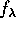
being defined by .
with (since the
operation on is just the left action on
pulled to the right via *).
This in turn leads to the A-module homomorphism 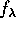
being defined by .
The compatibility
with the functor is obvious (compare (1.8) in [GL]).
The statements concerning the follow from
(3.2) and (3.4) of [GL]. For this purpose, note that the
radical of  is nothing but the kernel of
where again the action of A is pulled from left to right via *.
Finally, the statement on the decomposition numbers
follows from (3.6) of [GL].
is nothing but the kernel of
where again the action of A is pulled from left to right via *.
Finally, the statement on the decomposition numbers
follows from (3.6) of [GL].
If K is a field and all are isomorphisms, then according to Theorem (3.8) of [GL] is semisimple. For the field Q of fractions on an integral domain R this is by flatness the case iff is injective for all . If this is the case call A generic semisimple. Even for such an A it is possible that for some field K. For a prime p we will throughout denote by F:=[p]=R/(p) the corresponding residue class field for short. We set
According to (3.10) in [GL] for a field K, the algebra
is quasi-hereditary if for all . Let us call A integrally quasi-hereditary if
for all primes 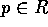.
We now define a global version of in  .
Throughout, we will not distinguish between right A-modules and
their residue classes in or
.
Throughout, we will not distinguish between right A-modules and
their residue classes in or  any more. Let be
the cokernel of . We set
any more. Let be
the cokernel of . We set
Note that  is not the residue class
of some A-module in general. But if K is a field and an
R-algebra, then the map
is not the residue class
of some A-module in general. But if K is a field and an
R-algebra, then the map  of chapter 3 carries this element to the
residue class of in the Grothendieck group
.
of chapter 3 carries this element to the
residue class of in the Grothendieck group
.
Let be the
 -linear span of all
-linear span of all  in
in
 .
We wish to show that for a generic semisimple cellular algebra A over
a pid you always have . From now on, let us assume
that R is a pid. We call an element positive
if in the unique expression with respect to the
.
We wish to show that for a generic semisimple cellular algebra A over
a pid you always have . From now on, let us assume
that R is a pid. We call an element positive
if in the unique expression with respect to the  -basis
-basis
 of
of  all integer coefficients are
nonnegative. Write for the submonoid of
all these elements and
for the span of in . Note that 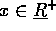 is zero,
iff [p]x=0 for all primes p, whereas is zero,
iff the residual series in
all integer coefficients are
nonnegative. Write for the submonoid of
all these elements and
for the span of in . Note that 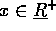 is zero,
iff [p]x=0 for all primes p, whereas is zero,
iff the residual series in  is zero for all primes p.
is zero for all primes p.
PROOF:Since the R-annihilator of is contained in the R-annihilator of xa for all , it follows that the R-module decomposition of M into primary components is in fact a decomposition of A-modules. Thus we may assume that M is primary as an R-module. Let p be the corresponding prime. Now for all primes 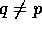 the residual series is constant zero. Let us consider . Recall that F:=R/(p) and means , that is . Since these simple -modules form a basis of the Grothendieck group of , there are unique nonnegative integers such that
For all 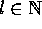 there is an -epimorphism
given by multiplication by p. This shows that is nonnegative. There is a smallest number j, such that for all , since M is a torsion module. We set
This is obviously contained in . By Lemma 4.1 it remains to show that for all primes q. For both series are identically zero. For q=p by multiplicativity of , it is enough to show
for all i. This can be calculated with help of (3).
PROOF:This is immediate from the definition of  and the
Lemma 5.1 since under the above assumption
is an R-torsion module.
and the
Lemma 5.1 since under the above assumption
is an R-torsion module.
PROOF:By Lemma 4.1
we have to show that the residual series of M and N
coincide for all primes p. The epimorphism from
to considered in the proof
of Lemma 5.1 and being induced by multiplication by p
must be an isomorphism in the case of a free module. Therefore,
the residual series of M and N are constant.
Thus the proof is finished as soon as
we have shown [p]M=[p]N for all primes p.
Since the sum M+N
in V again is a full lattice,we can
reduce to the case .
Now let be the localisation of R
at the prime ideal (p) and 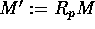,
the corresponding lattices in V.
Multiplication by [p] - the residue class in  of the field -
is defined in as well and leads to the same
elements [p]M'=[p]M resp. [p]N'=[p]N in the Grothendieck group
(see Propositions 3.1 and 3.2).
Finishing the proof now is standard (cf. [CR], 16.16).
of the field -
is defined in as well and leads to the same
elements [p]M'=[p]M resp. [p]N'=[p]N in the Grothendieck group
(see Propositions 3.1 and 3.2).
Finishing the proof now is standard (cf. [CR], 16.16).
Applying Lemma 5.3 to the image of and
 as lattices in , one immediately
gets
as lattices in , one immediately
gets
PROOF:By Lemma 5.1 we can reduce to the case where
M is free as an R-module, since an arbitrary M can be written
 with free and an R-torsion module (even in
with free and an R-torsion module (even in
 ). Let Q be the field of fractions on R. Since A is
generic semisimple, decomposes into a direct
sum of simple modules
). Let Q be the field of fractions on R. Since A is
generic semisimple, decomposes into a direct
sum of simple modules  .
Let be the direct sum of the corresponding
.
Let be the direct sum of the corresponding
 . Both M and N are full lattices in
so that it follows M=N in
. Both M and N are full lattices in
so that it follows M=N in  by Lemma 5.3.
Since by Corollary 5.2 the proof is
finished.
by Lemma 5.3.
Since by Corollary 5.2 the proof is
finished.
Throughout, let us now assume that A is generic semisimple.
Note that in this case the set defined above is finite
for all  .
Set
where is the largest number such that .
.
Set
where is the largest number such that .
PROOF:To show existence, there are elements
such that
by Lemma 5.1. Furthermore, the proof of this
lemma shows that for all . If we multiply the equation
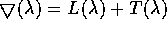 by [p].
Because
and , we get
thus
.
Because , this in
turn implies 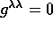 for all  .
Setting and
for
we are finished since
and obviously .
.
Setting and
for
we are finished since
and obviously .
For uniqueness, take to be a second set of such
elements. Since by
definition and for both elemens are in ,
it is enough to show
for all primes p.
In the case this follows from condition (b). Using (b) and multiplying (c)
by [p] we get from Proposition 3.2
for all where are the
usual decomposition numbers for . To this claim, note that
in by Corollary 5.4 and
Proposition 3.2.
This completes the proof.
For any field K you have where is the map induced by the base change to K (see chapter 3). Therefore, we call these elements the global decomposition numbers of A.
PROOF:Since  there must be a prime
such that . This implies
for the residue class field F=R/(p).
The corresponding known result for fields then implies the statement
of the proposition.
there must be a prime
such that . This implies
for the residue class field F=R/(p).
The corresponding known result for fields then implies the statement
of the proposition.
For any total order on refining the given partial
order, the matrix
is therefore upper triangular with respect to this total order.
Setting and
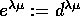 for one gets a
unitriangular (and so invertible) matrix
.
Note that condition (c) of
proposition 5.6 holds for the , too.
We call D the global decomposition matrix and E the
regular decomposition matrix. The fact that E is invertible
implies that  is generated as an
is generated as an  module by the
costandard modules
module by the
costandard modules  , too.
, too.
Let us determine the relations among the  resp. the
resp. the
 . Denote by the canonical
basis elements of the free
. Denote by the canonical
basis elements of the free  -module .
We define two epimorphisms
by
and . If is the
automorphism of given by the regular
decomposition matrix E, i.e. , we clearly have . Let and be the kernels of and
respectively. We only need to determine since
.
-module .
We define two epimorphisms
by
and . If is the
automorphism of given by the regular
decomposition matrix E, i.e. , we clearly have . Let and be the kernels of and
respectively. We only need to determine since
.
Let be a prime such that . Since
for all we have  the costandard modules form a basis of the Grothendieck group . Therefore
there are unique integers for all 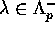 and such that
the costandard modules form a basis of the Grothendieck group . Therefore
there are unique integers for all 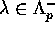 and such that
For each pair with we set
and let be the  -linear span of all elements
for such pairs and positive
integers .
-linear span of all elements
for such pairs and positive
integers .
PROOF:Since the residual series of the costandard modules are constant we have for a prime q
Now,  whenever by the formulas
(1) and (3). Multiplying the bracket term by
[p] gives zero by construction of the numbers
. Therefore
for all primes q, thus .
whenever by the formulas
(1) and (3). Multiplying the bracket term by
[p] gives zero by construction of the numbers
. Therefore
for all primes q, thus .
Now let
be in with . We first claim
that there exists 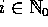 such that
for all and primes .
For if there is and a prime such
that for all there exists giving
, it follows that the coefficient
of 1 in the unique presentation of with respect
to the  -basis
-basis  of
of  is nonzero.
Now, if Q is the field of fractions on R and the corresponding map of chapter
3 we must have . But this implies
is nonzero.
Now, if Q is the field of fractions on R and the corresponding map of chapter
3 we must have . But this implies
since all costandard modules form a basis of . This
contradict in  .
.
We now proceed by induction on such a number i. For i=0 we must have x=0 since then the residual series of all are zero for all primes. Assume i>0. There are uniquely determined numbers such that . Set
Then . Write . By construction of y we have
for all
and all primes p.
We claim for all primes p and
. If this is shown the induction hypothesis
applies to z giving as required.
Keep p fixed and let . The coefficient of in y is of the form with some being nonzero only for a finite number of primes q. Since , it follows by definition of . Making use of we calculate

where in addition we used the fact that the residual series of
 is constant. Since 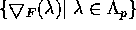 is a basis of the coefficients
must be zero for as well.
is constant. Since 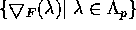 is a basis of the coefficients
must be zero for as well.
Clearly iff A is integrally quasi-hereditary. Thus we have proved
Examples of integrally quasi-hereditary generic semisimple cellular algebras are given by Schur algebras and generalizations of them.